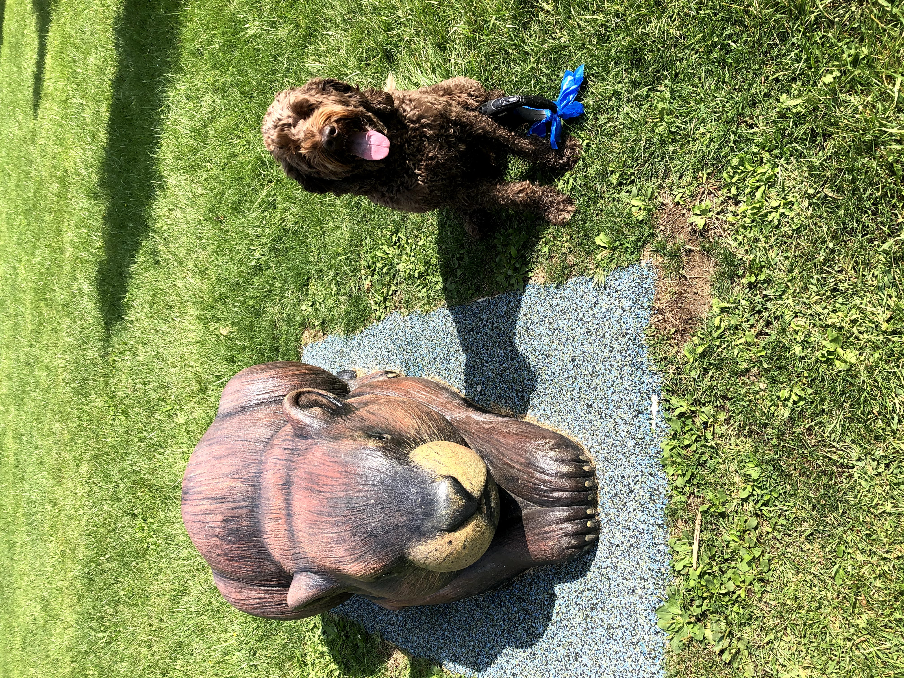

HTML5 & Accessibility
Semantic & W3C-Compliant Markup
Built with landmark regions, keyboard skip-links, descriptive alternative text, and WCAG AA/AAA color contrast verified with W3C Validator and WAVE.
Hello! I am Quang Tuan, a software engineering student passionate about building responsive, accessible, and standards-compliant websites from scratch using semantic HTML5, modern CSS3 (Grid & Flexbox), and vanilla JavaScript.

This portfolio is custom-coded from scratch using a mobile-first layout that adapts seamlessly across three breakpoints: Mobile (<768px, 1 column), Tablet (≥768px, 2 columns), and Desktop (≥1024px, 3 columns).
Built with landmark regions, keyboard skip-links, descriptive alternative text, and WCAG AA/AAA color contrast verified with W3C Validator and WAVE.
Uses CSS custom properties (variables), fluid grids, flexible navigation bars, and media queries including support for reduced motion preferences.
Includes a persistent Dark/Light theme switcher, live project category filtering, a keyboard-accessible Lightbox modal, and real-time form validation.